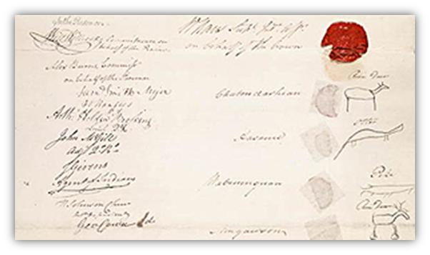
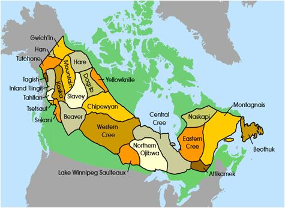

Before 1906
No treaty in the region
Study the promises, land and people involved in Treaty 10
At this point in time a treaty was needed between the government of Canada and certain groups of First Nation peoples in Saskatchewan and a small area of Alberta. Previous treaties had been drawn up for neighboring aboriginals and the government’s goal was to provide a similar treaty to these aforementioned peoples. As trade and settlement expanded west, conflict over the land began to arise. The government of Canada wished to have a concise and legal document indicating exactly what land could be settled and traded upon and what land would remain as First Nations hunting grounds.

Unlike earlier treaties, Treaty 10 covered areas that had not previously been included in agreements.

The government sought to secure access to land and resources, while Indigenous peoples aimed to protect their way of life and ensure their rights were respected. Differences in understanding between written agreements and oral promises played an important role in how the treaty was interpreted. These differences continue to influence how Treaty 10 is understood today.
The core provisions of treaty No. 10 differs for Natives and half-Natives. Half-Natives received compensation according to an already established fashion, which granted 240 acres of scrip that could be redeemed for 240$. The core provisions for Natives are far more detailed and regard land grants, systems for financial assistance, and also special hunting, fishing and trapping exceptions. The terms of the land grants are that each family of five, living within the reserve, were granted one square mile of land. Natives who choose to live outside the reserve system were granted 160 acres of land. These Native lands, with the consent of the Natives, were subject to the government’s selling or leasing for public purposes, and would be compensated with land or money. The financial element of the treaty included yearly payments of 5$ per person, 15$ per headman, and 25$ per chief. Financial aids included the distribution of clothing to each chief and headman every three years along with an annual distribution of ammunition and twine. Also assistance was to be directed towards agriculture and stock rising. There was also a presentation of flags and medals and an initial gift of 12$ per person, 22$ per headman, 32$ per chief. Special privileges were granted to Natives who remained the right to hunt, fish and trap. These rights were subject to government regulations and excluded land used by the public. The final provision regarded education that was to be provided, as the government deemed necessary.

Treaty 10 was signed between 1906 and 1907 between the Canadian government and First Nations.
No treaty in the region
Negotiations begin
Final signings completed